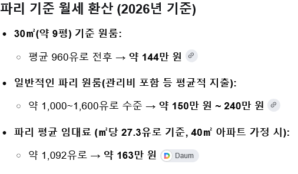

https://bbs.ruliweb.com/best/board/300143/read/77006199
철강 노동자가 월급이 170만원
한국 어지간한 노동자보다 못 버는 것 같은데

https://bbs.ruliweb.com/best/board/300143/read/77006199
철강 노동자가 월급이 170만원
한국 어지간한 노동자보다 못 버는 것 같은데

Eu라 다른나라가기 쉬운거임?
EU + 서구권 백인 + 국적 취득의 쉬움
EU는 그냥 너무 쉽고 미국이나 캐나다도 쉽고 ㅎ
근데 너무 유명한 부자나 기업은 그래도 유럽 안에서 이동이고
미국이나 캐나다는 젊은 사람들 중에 열정적인 사람들??
여튼 저쪽 동네 국적이란게 취득도 쉽고 2개국, 3개국 다국적인 사람도 넘치고....
아하
어떻게든 하겠지ㅋ
유럽은 블루칼라가 돈 잘 번다, 기술직 우대해준다 이러던데 그게 아닌가?
우리도 오늘 gdp로 평균의함정이라며 광광 ㅜㅜ 우러욧 소리많이나오긴했느데 쟤들도 평균함점 오지게큰데 우리보다 더 심하구나.
진짜 가끔 국내 다큐나 해외선진국환상심어주는 교육방송 보면 너무 편파심하긴함.
여기도 또 사회주의가 어쩌구 식민지가 어쩌구 그런 얘기 하는데....
대충 20년 일했는데 월급 200만원도 안 되는데 저 사람이 식민지 뜯어 먹는 거 같고
영부인 식단 바꾸는데 6억 들었다는데 그게 사회주의같고 그렇게 생각함 ㅋㅋㅋㅋ?
다른 프랑스 연금 글에도 썼지만
계층분리가 끝났으니 프랑스와 서민, 혹은 상위계층과 서민이
연금과 복지로 서민이 일해야하는 큰 대의를 만든거임
부자는 부자인 티 덜 내고, 서민은 시위나 혁명 그만하고 일하고 ㅋㅋㅋ
근데 재정적자 발생하니 마크롱이 재정 건전성을 높이기 위해서
부자에게는 증세를, 서민에게는 연금 개혁을 한거임
부자나 기업은 바로 다른 나라로 존나 튀었고
결국 부자와 기업에 대한 증세는 롤백되었음
애초 계획은 서로서로 통나무 들자 이거였지만 그게 안되니
서민은 통나무 들고 부자와 기업은 감세해줄테니 잘해보자! 이걸로 바꿨지만
지금은 실패했으니 마른 수건인 서민만 짠 상황이지 ㅋㅋ
서민은 다른 나라로 튈 능력이 안 되고
부자는 다른 나라로 튈 능력이 되니까 저렇게 되는거임
이런 거 얘기하면 어쨌든 재정적자니 연금이 어쩌구 저쩌구 하는데
창조적 파괴... 제3자 입장에서 숫자만 보면서 얘기하면
효율 좋은 거 누가 모르는 것도 아니고 진짜 별거 아닌데
당하는 당사자가 되면 돌아버리는거고 그게 노인이되어서 연금 관련이다?
그냥 죽으라는 건데 누가 하하호호 하면서 받아들이겠냐 이거지
그리고 미디어와 통신이 발달해서 영부인이 식단 변경에 6억을 썼다~ 이런거 보이는데 ㅋㅋㅋ
개드립에 올라간 스페인이었나? 월세 올라서 살던 집에서 쫓겨나서
병원에서 죽어간 할머니 얘기 있었는데 (이것도 복잡한 얘기가 많음)
유럽쪽 서민들이 과거 열강의 혜택을 받아서 부유하게 살고 그런게 아님
유럽은 전체적으로 계층분리 끝나서 서민은 그냥 다 거지라고 생각하면 됨
일본 서민들이 아끼느라 돈 못 쓰고 절약하고 뭐 그런 얘기 많이 들었을텐데
그거의 더 극심한 상황이라고 보면 되고 그냥 돈이 없음
코로나 때 돈 없다고 샤워였나 머리 감기였나...
그것도 줄여야 했다고 뉴스 봤는데 그것도 유럽이었을거임
괜히 한국 사람들이 실제로 쓸 수 있는 돈이 더 많고 저축률이 더 높고 자산이 더 많고 그런 얘기 하는게 아님
저쪽 서민들은 그렇게 60년~70년 사회적 약속을 믿고 살아가는데 연금 개혁?
세금과 월세 내고 모은 돈 없고 남은 건 사회가 약속한 연금과 복지인데 개혁?
다시 창조적 파괴로 돌아가는데....
너도 알고 나도 알고 다 알지 ㅋㅋㅋㅋ
솔직히 개혁 당해야하는 사람들도 알걸?
근데 그 누가 아! 좋습니다! 나라를 위해
부자들은 감세 혜택 받고 그렇지만 저는 수십년간 부은 연금 개혁 당하고 제 노후를 버리겠습니다!
저는 뭐 세끼 먹을 거 두끼 먹고, 고기 먹을 거 스팸 먹고,
이것도 안 되면 저 구석에서 쓰레기통에 버려진 음식물이나 먹으면서 버티다
고독사나 변사체로 발견되죠! 이러겠냐 이거지 ㅋ
부자들과 기업들은 좀만 불이익 받으면 다 튀는데
저는 뭐 튈 능력이 안 되니 죽어야죠 ㅎㅎㅎㅎ 이러겠냐 이거지 ㅋㅋ
그리고 연금이나 복지 같은 건 한번 건들면
다음 세대가 나라를 안 믿어 버린다는 문제도 있어서
어차피 돈 존나 뜯기고 필요하면 나몰라라 하고 버릴텐데 왜 내나요? 에 대한 답도 내야하고 ㅋㅋ
여튼 프랑스 서민의 입장은 연금개혁? 근데 서민만? 이런 거임
부자는 왜 감세해요? 튀니까요 ㅋㅋㅋㅋㅋㅋ
노블레스 오블리주 같은 거 없이 이제 마른 수건 다 짜고 버리는 거 보고 있는거임